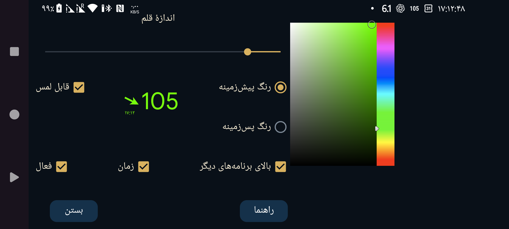

ar az be de es fa fr hi it ja ko nl pl ru tr uk uz zh en
در این صفحه اندازهٔ قلم و رنگ نوشته و پسزمینهٔ «نمایش شناور گلوکز» را تنظیم میکنید.
«قابل لمس»: وقتی فعال باشد، میتوانید نمایش شناور را با انگشت جابهجا کنید یا با لمس طولانی بدون حرکت، آن را کوچک کنید. وقتی خاموش باشد، لمس از نمایش شناور عبور میکند و برنامهٔ زیر آن قابل استفاده است. با دو بار لمس نمایش شناور نیز میتوان حالت غیرقابللمس را فعال کرد.
«شفاف»: پسزمینه دیده نمیشود.
«روی برنامه»: نمایش شناور حتی وقتی Juggluco در پیشزمینه است نیز دیده شود.
«زمان»: زمان مربوط به مقدار گلوکز را نمایش بده.
«فعال»: نمایش شناور را روشن کنید.
با «منوی میانی سمت چپ ← نمایش شناور» میتوانید آن را روشن یا خاموش کنید.
با لمس طرفِ پیکانِ نمایش شناور به Juggluco برمیگردید. دو بار لمس طرفِ عدد گلوکز، نمایش شناور را غیرقابللمس میکند. لمس طولانی عدد گلوکز آن را کوچک میکند تا بتوانید با برنامهٔ زیرش کار کنید؛ با لمس نمایش کوچک دوباره بزرگ میشود. با لمس و کشیدن طرفِ عدد گلوکز میتوانید نمایش شناور را جابهجا کنید.
برای نمایش روی سایر برنامهها، Juggluco به مجوز ویژهای نیاز دارد. در Wear OS و Android Automotive باید آن را با دستور adb بدهید:
adb shell pm grant tk.glucodata android.permission.SYSTEM_ALERT_WINDOW
در بعضی ساعتها (مانند TicWatch Pro) از این مسیر هم میتوان مجوز داد: «تنظیمات Android/Wear OS ← برنامهها و اعلانها ← اطلاعات برنامه ← Juggluco ← پیشرفته ← نمایش روی سایر برنامهها».